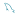
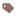

| 目录 / 模式 | ① 源 SVG 图标 | ② 来源 | ③ 最终 | 16px |
|---|---|---|---|---|
| annotation | 自绘（SVG 几何/文字） | 自绘：参考 Atom Material Icons 截图的配色与图形 | ||
| aspect | 自绘（SVG 几何/文字） | 自绘：参考 Atom Material Icons 截图的配色与图形 | | |
| chain | 自绘（SVG 几何/文字） | 自绘：参考 Atom Material Icons 截图的配色与图形 | ||
| config | 自绘（SVG 几何/文字） | 自绘：参考 Atom Material Icons 截图的配色与图形 | | |
| context | 自绘（SVG 几何/文字） | 自绘：参考 Atom Material Icons 截图的配色与图形 | ||
| controller | 自绘（SVG 几何/文字） | 自绘：参考 Atom Material Icons 截图的配色与图形 | ||
| dto | 自绘（SVG 几何/文字） | 自绘：参考 Atom Material Icons 截图的配色与图形 | | |
| entity | 自绘（SVG 几何/文字） | 自绘：参考 Atom Material Icons 截图的配色与图形 | ||
| enums | 自绘（SVG 几何/文字） | 自绘：参考 Atom Material Icons 截图的配色与图形 | ||
| exception | 自绘（SVG 几何/文字） | 自绘：参考 Atom Material Icons 截图的配色与图形 | ||
| extension | 自绘（SVG 几何/文字） | 自绘：参考 Atom Material Icons 截图的配色与图形 | ||
| filter | 自绘（SVG 几何/文字） | 自绘：参考 Atom Material Icons 截图的配色与图形 | ||
| global | 自绘（SVG 几何/文字） | 自绘：参考 Atom Material Icons 截图的配色与图形 | ||
| handler | 自绘（SVG 几何/文字） | 自绘：参考 Atom Material Icons 截图的配色与图形 | | |
| listener | 自绘（SVG 几何/文字） | 自绘：参考 Atom Material Icons 截图的配色与图形 | | |
| mapper | 自绘（SVG 几何/文字） | 自绘：参考 Atom Material Icons 截图的配色与图形 | ||
| point | 自绘（SVG 几何/文字） | 自绘：参考 Atom Material Icons 截图的配色与图形 | | |
| request | 自绘（SVG 几何/文字） | 自绘：参考 Atom Material Icons 截图的配色与图形 | ||
| response | 自绘（SVG 几何/文字） | 自绘：参考 Atom Material Icons 截图的配色与图形 | | |
| runner | 自绘（SVG 几何/文字） | 自绘：参考 Atom Material Icons 截图的配色与图形 | | |
| service | 自绘（SVG 几何/文字） | 自绘：参考 Atom Material Icons 截图的配色与图形 | ||
| util | 自绘（SVG 几何/文字） | 自绘：参考 Atom Material Icons 截图的配色与图形 | ||
| wrapper | 自绘（SVG 几何/文字） | 自绘：参考 Atom Material Icons 截图的配色与图形 | | |
| .mvn | ../../src/assets/file-icons/folder-mvn.svg | 自建：material 的 Maven 羽毛路径，单色填充 | ||
| .sys | 自绘（SVG 几何/文字） | 自绘：Windows 四格窗（系统/驱动文件） | ||
| .csharp | 自建：csharp.svg 路径 + 品牌紫文件夹 | |||
| mybatis | 自绘（SVG 几何/文字） | 自建组合：文件夹 + 品牌字母「M」 | ||
| mysql | 自绘（SVG 几何/文字） | 自建组合：material 文件夹 + vscode-icons 的海豚路径（与文件图标同一海豚） | ||
| mysql 文件 | vscode-icons/folder_type_mysql.svg 的海豚路径 | 自绘组合：海豚文件图标（.pdb / .frm / .ibd / .myd 等 MySQL 文件共用） |  | |
| spring | devicons/devicon:icons/spring/spring-original.svg | 自建组合：material 文件夹 + devicon 的 Spring 叶子 | ||
| ssh | 库内现成 folder-console.svg（终端/远程） | |||
| Users | 自绘（SVG 几何/文字） | 自建组合：文件夹 + 双人形轮廓 | ||
| home | 库内现成 folder-home.svg（主目录） | |||
| user | 自绘（SVG 几何/文字） | 自建组合：文件夹 + 单人形轮廓 | ||
| .swidtag | 自绘（SVG 几何/文字） | 自绘：软件标识标签（SWID tag） |  | |
| zh | 自绘（SVG 几何/文字） | 自建组合：文件夹 + 文字「文」 | ||
| en | 参考 folder-font：蓝文件夹 + 浅蓝 A 字形（复用 folder-font 的字母路径，换色） | |||
| tomcat | devicons/devicon:icons/tomcat/tomcat-original.svg | 自建组合：品牌橙文件夹 + devicon 的彩色 Tomcat | ||
| python | 库内现成 folder-python.svg | |||
| jdk | 库内现成 folder-java.svg（JDK 直接用） | |||
| kotlin | 库内现成 folder-kotlin.svg | | ||
| kotlinc | 复用库内 folder-kotlin.svg（Kotlin 编译器目录） | |||
| NDK | 库内现成 folder-android.svg（Android NDK） | |||
| share | 库内现成 folder-shared.svg | |||
| charsets | 库内语义 folder-font.svg（字符集/字体） | |||
| default | 库内语义 folder-config.svg（默认配置） | |||
| AppData | 库内现成 folder-windows.svg（Windows 系统目录） | | ||
| Local | 复用 folder-windows.svg | | ||
| Roming | 复用 folder-windows.svg（Roaming） | | ||
| Microsoft | 复用 folder-windows.svg | |||
| NetWork | 库内语义 folder-server.svg（网络目录） | |||
| dist | 库内现成 folder-dist.svg | |||
| artifacts | 库内语义 folder-packages.svg（构建产物） | |||
| sites | 库内语义 folder-public.svg（站点） | |||
| installer | 库内语义 folder-download.svg（安装包） | |||
| image | 库内现成 folder-images.svg（模糊匹配 *image*） |